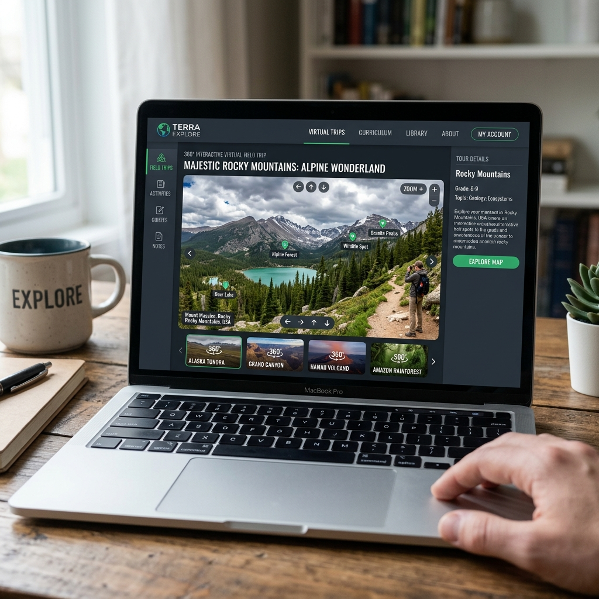
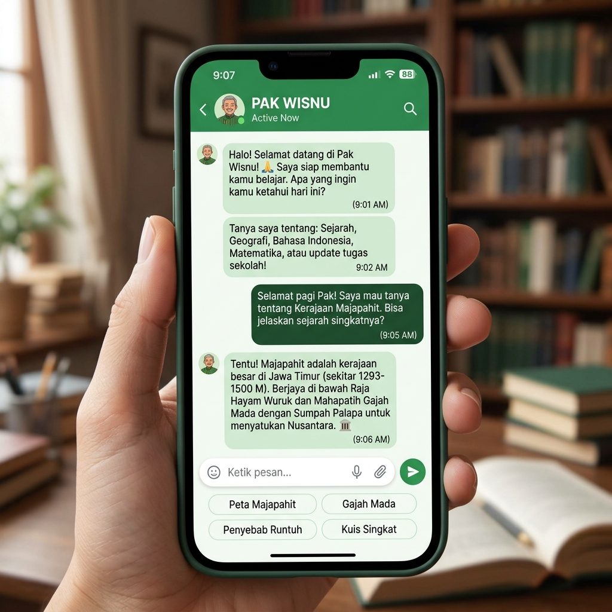
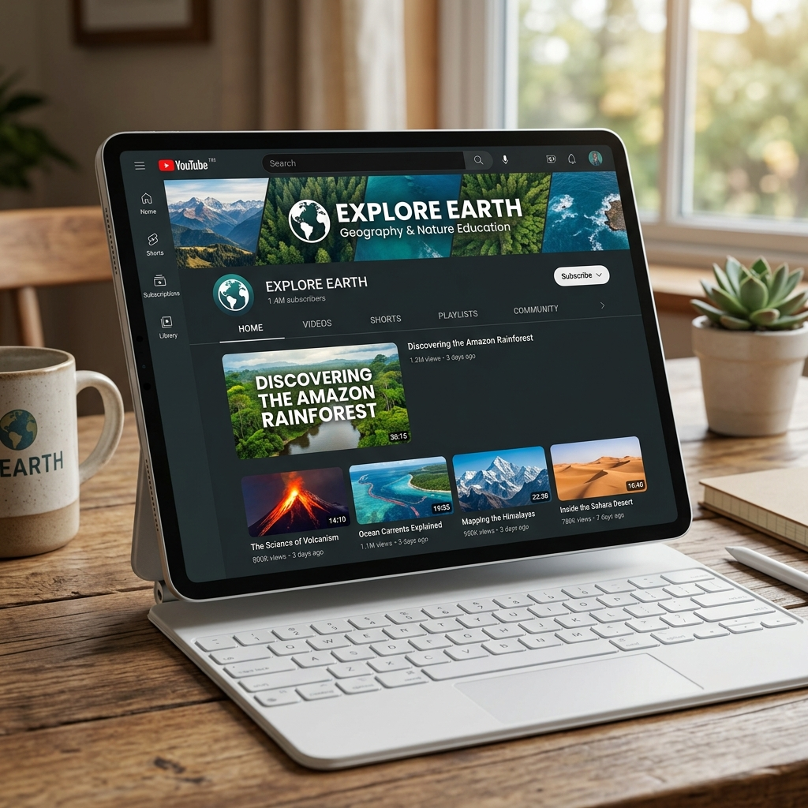

Karya & Proyek
Koleksi proyek pengembangan media pembelajaran dan teknologi pendidikan.

Website GeoTalk Media
Platform media pembelajaran virtual field trip yang menampilkan destinasi-destinasi alam Indonesia secara interaktif. Dilengkapi panorama 360°, video, dan materi kontekstual.
Kunjungi Website
VFT Hubungan Manusia & Lingkungan
Virtual Field Trip untuk materi hubungan manusia dan lingkungan di berbagai lokasi: Tambang Singosari, Bromo, Kalipait Ijen, Kawah Wurung, dan lainnya.
Lihat Proyek
VFT Materi Lingkungan Hidup
Mengembangkan materi lingkungan hidup geografi SMA untuk meningkatkan Ecoliteracy siswa meliputi aspek kognitif, afektif, dan psikomotor.
Lihat Proyek
AI dalam Media VFT
Sistem Kecerdasan Buatan adaptif yang diintegrasikan dalam ekosistem VFT untuk memproses data real-time, mengidentifikasi pola, dan memberikan respons analitik terukur.
Lihat Proyek
Konten Edukasi YouTube & TikTok
Pengembangan konten pembelajaran geografi melalui platform YouTube dan TikTok @GeoTalkMedia untuk menjangkau audiens yang lebih luas.
Kunjungi Channel